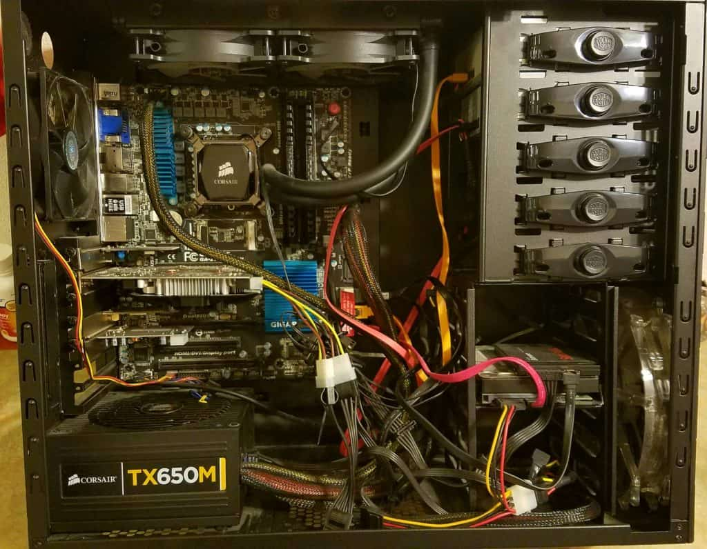
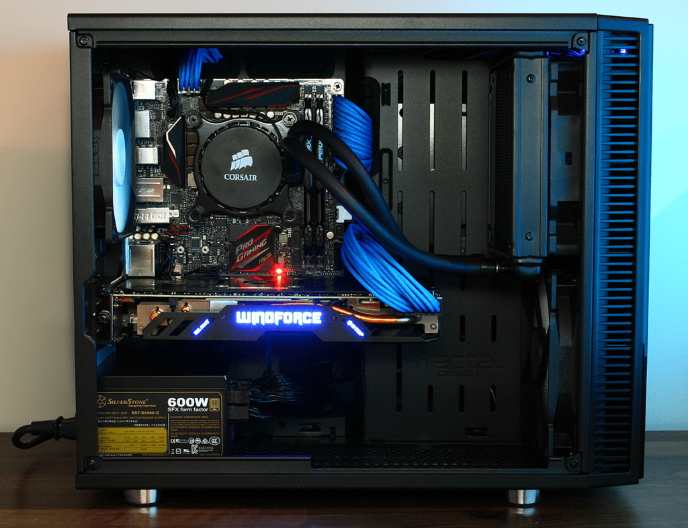

<div id="active-div" class="container-fluid" [ngStyle]="{'visibility': isVisible ? 'visible' : 'hidden'}">
    <div id="etape-deux" class="container">
        <h1>Le montage</h1>
        <p>La deuxième étape consiste à assembler toutes les pièces ensemble afin de construire votre ordinateur sur mesure. C'est une étape importante qui définira le rendu final de votre ordinateur. Un montage propre, c'est un pc qui aura la classe ! Voyez donc ...</p>
        <div class="row">
            <div class="col-xs-12 col-sm-6 col-md-6 col-lg-6 responsive" style="text-align: center;">
                <h4>A l'arrache...</h4>
                
            </div>
            <div class="col-xs-12 col-sm-6 col-md-6 col-lg-6 responsive" style="text-align: center;">
                <h4>Proprement...</h4>
                
            </div>
        </div>
    </div>
</div>